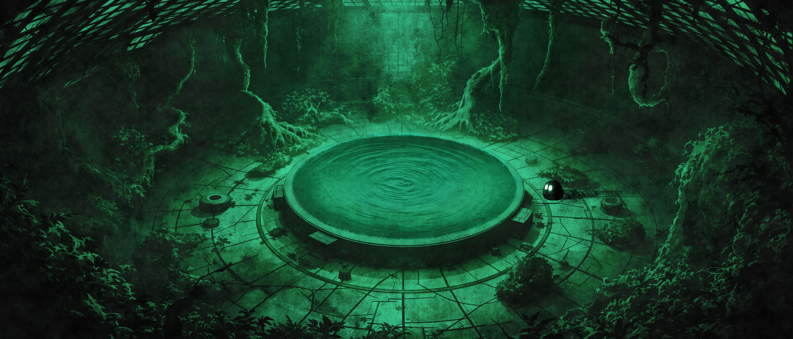
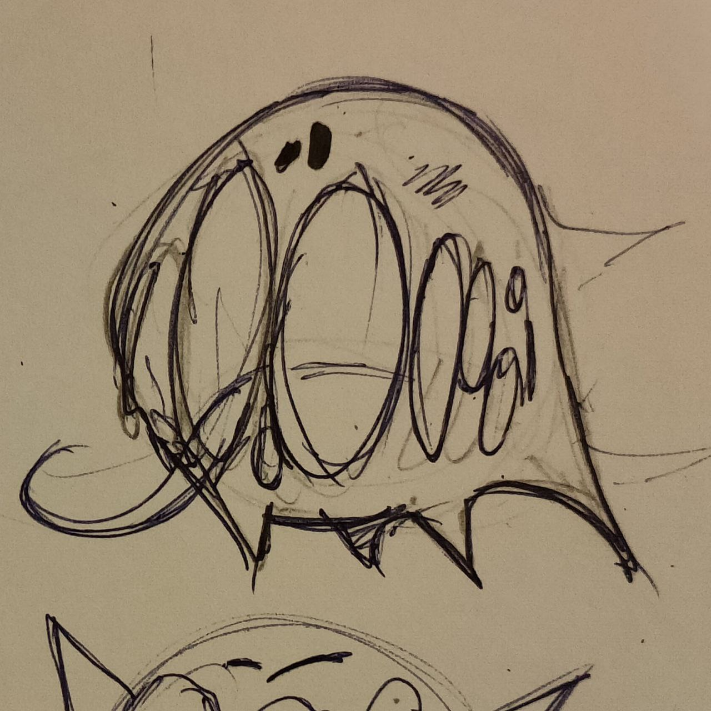
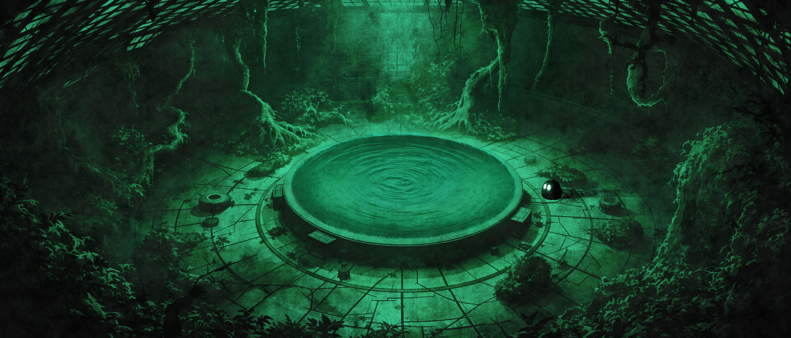
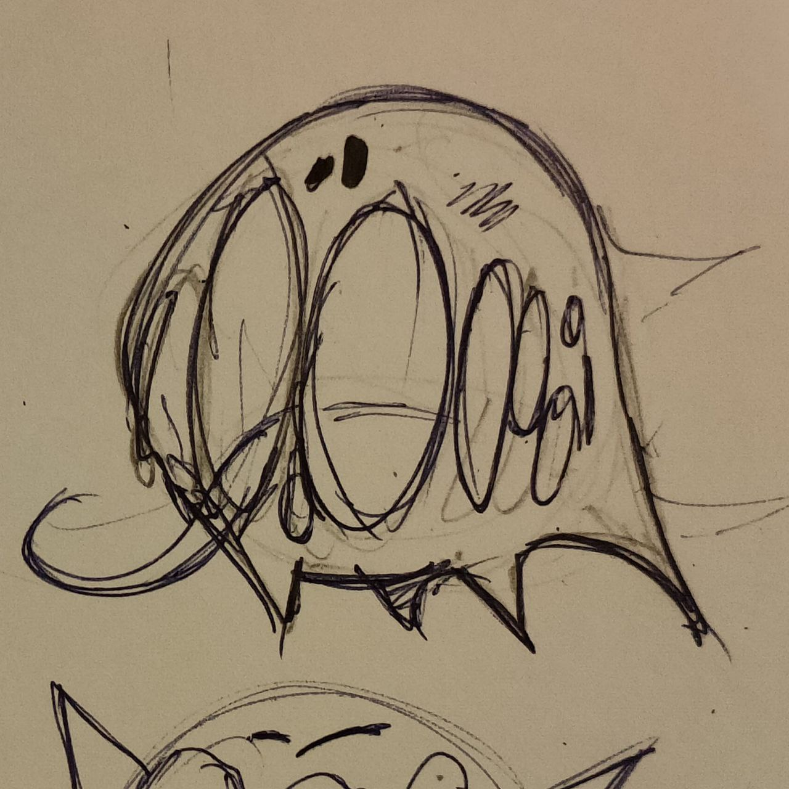

🌱 О проекте
В центре таинственного комплекса пробуждается не человек, не машина — нечто иное. Он не помнит, кто он такой, но чёрная субстанция внутри него растёт, откликаясь на остатки разрушенного мира. Вас зовут Экси. Вы — результат эксперимента, которого не должно было быть.
INVADE предлагает погружение в густую, тревожную атмосферу научного комплекса после катастрофы. Вам предстоит пробираться сквозь полуразрушенные лаборатории, охваченные хаосом биологических мутаций и техногенных ловушек. Здесь каждое открытое помещение — это новый фрагмент правды, каждое умение — шаг к пониманию своей природы, а каждый выбор — возможно, последний.
📖 Сюжет
В разрушенной лаборатории звучат сирены. Колбы разбиты. Учёные мертвы.
Экси приходит в себя без памяти, но с инстинктом: нужно выбраться. Погружаясь всё глубже в
заброшенный комплекс, он сталкивается с жуткими существами, солдатами и другим «экспериментом» — Люмиром,
решившим использовать хаос ради власти.
С каждым шагом ты открываешь фрагменты правды. Кто ты? Почему Глеон — чёрная субстанция — откликается именно на
тебя?
Финальное решение будет за тобой: спасти мир, уничтожить его... или переписать эволюцию.
🧠 Геймплей и механики
- Метроидвания в 3D: открывай новые локации с помощью новых способностей
- Органический апгрейд: сжатие, щупальца, щит, массовый выброс — твои силы растут с Глеоном
- Стелс и бой: выбирай — проскользнуть мимо врагов или уничтожить их
- Моральный выбор: ключевые развилки сюжета влияют на финал
- Тактические боссы: каждый требует уникального подхода
- Интерактивный ИИ: враги реагируют на звук, свет и следы
🎨 Арт-стиль
INVADE визуально вдохновлён промышленным sci-fi, органическими структурами и биомеханикой.
Ты увидишь:
- Мрачные лаборатории с разбросанными документами
- Светящиеся подземные сады с живыми ловушками
- Серверные, пульсирующие гелем Глеона
- Визуальные образы, сочетающие ужас, тайну и красоту разрушения
Все арты созданы вручную командой художников — мы сделали упор на уникальный стиль, сочетающий 3D-реализм и нарочито деформированную органику.
🖼️ Галерея проекта
 



🔍 Раработка
INVADE создаётся командой студентов Московского Политеха в рамках проектной деятельности.
Это не просто игра — это эксперимент в жанре, в котором мы совмещаем: